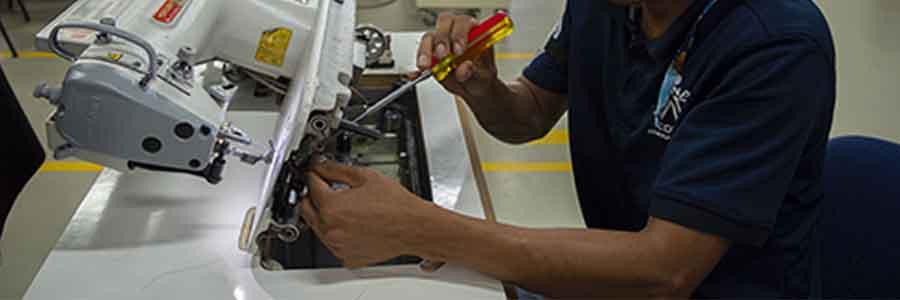
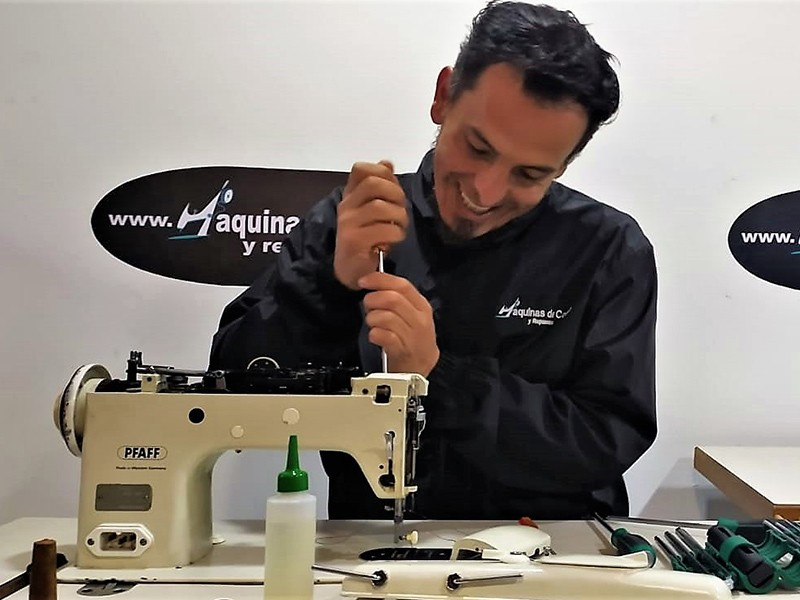
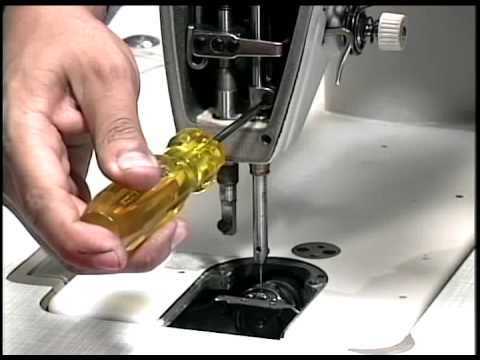

MANTENIMIENTO Y POSIBLES FALLAS EN LAS MAQUINAS INDUSTRIALES DE CONFECCIÓN
Mantenimiento y Posibles Fallas en las Máquinas Industriales de Confección
El mantenimiento adecuado y la identificación de posibles fallas en las máquinas industriales de confección son cruciales para asegurar la eficiencia, la calidad del producto final y la seguridad en el entorno de trabajo. Las máquinas de confección están sometidas a un uso intensivo, lo que puede provocar desgaste y fallos si no se les presta la atención adecuada.

Mantenimiento de Máquinas Industriales de Confección
1. Mantenimiento Preventivo
El mantenimiento preventivo implica la inspección regular y el servicio de las máquinas para evitar fallos y prolongar su vida útil. Los pasos incluyen:
Limpieza Regular: Limpiar las máquinas para eliminar el polvo, pelusa, hilos y residuos de tela que pueden acumularse y causar problemas. Especial atención debe darse a la zona de la aguja, los tensores de hilo, las cuchillas de la remalladora y el área del gancho.
Lubricación: Aplicar aceite a las partes móviles según las recomendaciones del fabricante. Esto incluye ejes, rodamientos, bielas, y otras partes móviles para reducir la fricción y evitar el desgaste prematuro.
Revisión de Tensión de Hilos: Ajustar las tensiones de los hilos regularmente para evitar costuras irregulares. Los tensores deben limpiarse y ajustarse según el tipo de hilo y material.
Inspección de Agujas: Las agujas deben revisarse regularmente para detectar desgaste o daños. Agujas dobladas o desgastadas deben reemplazarse inmediatamente para evitar daños a las prendas y a la máquina.
Ajuste de Presión del Prensatelas: Verificar y ajustar la presión del prensatelas para asegurar que la tela se mueva uniformemente durante la costura.
Revisión de Cuchillas en Overlock y Guillotinas: Las cuchillas deben estar afiladas y bien alineadas para asegurar cortes limpios. Reemplazar o afilar las cuchillas desgastadas.

2. Mantenimiento Correctivo
El mantenimiento correctivo se realiza para reparar problemas o fallas que ya han ocurrido. Incluye:
Reemplazo de Piezas: Cuando una pieza se desgasta o se daña, debe ser reemplazada para evitar fallos mayores. Esto puede incluir motores, correas, poleas, sensores, etc.
Reparación de Fallos Eléctricos: Inspeccionar y reparar problemas eléctricos como cables dañados, fusibles fundidos o componentes eléctricos defectuosos.
Reajuste de Componentes: Si los componentes están desalineados o mal ajustados, deben reajustarse para asegurar un funcionamiento correcto y seguro.

Posibles Fallas en Máquinas de Confección
1. Fallas Comunes en Máquinas de Puntada Recta
Puntadas Irregulares o Saltadas: Puede ser causado por agujas dobladas, incorrecta selección de aguja, problemas de tensión del hilo o un gancho desalineado.
Rotura del Hilo: Puede deberse a tensión excesiva, uso de hilo inadecuado, agujas dañadas, o guías de hilo desgastadas.
Atascos de Tela: Ocurre si la presión del prensatelas es inadecuada, si las agujas están desafiladas o si la tela no se alimenta correctamente.
2. Fallas en Máquinas Overlock (Remalladora)
Puntadas Flojas o Desiguales: Generalmente causadas por una incorrecta tensión de los hilos, cuchillas desafiladas, o problemas con el diferencial de alimentación.
Cortes Desiguales: Las cuchillas desafiladas o desalineadas pueden causar cortes irregulares en la tela.
Rotura del Hilo del Looper: Puede ser debido a un enhebrado incorrecto, tensión inadecuada, o problemas con el movimiento del looper.
3. Fallas en Máquinas de Puntada de Cadeneta
Costuras que se Deshacen: Puede ocurrir si la tensión no está bien ajustada o si el hilo utilizado no es adecuado para la máquina o el material.
Desgaste Prematuro de Componentes: Causado por una falta de lubricación o uso excesivo sin el mantenimiento adecuado.
4. Fallas en Máquinas de Bordado
Desplazamiento de Diseños: Puede ser causado por un bastidor suelto o mal alineado, o por problemas en el software de bordado.
Rotura de Agujas: Ocurre si se usan agujas incorrectas para el material, o si la velocidad de bordado es muy alta para el tipo de hilo y tela.
Atascos de Hilo: Puede ser debido a problemas con la tensión del hilo, enhebrado incorrecto, o acumulación de polvo y residuos.
5. Fallas en Máquinas de Doble Aguja
Desincronización de Agujas: Las agujas pueden desincronizarse, causando saltos de puntada o costuras desiguales. Esto puede ser debido a un mal ajuste o desgaste de la barra de agujas.
Tensión Desigual: Problemas con la tensión de los hilos en cada aguja pueden causar bucles o costuras flojas.
6. Fallas en Máquinas de Botones
Botones Mal Sujetados: Puede ocurrir si el ajuste de la distancia de puntada no es correcto, o si la tensión del hilo es inadecuada.
Problemas en el Alimentador de Botones: Si el alimentador está mal ajustado o tiene fallos mecánicos, los botones no se colocarán correctamente.
Mejores Prácticas para Prevenir Fallas
Capacitación del Personal: Asegurar que los operadores estén bien entrenados en el uso y mantenimiento básico de las máquinas.
Planificación de Mantenimiento: Implementar un calendario de mantenimiento preventivo regular para inspeccionar y mantener todas las máquinas.
Uso de Piezas de Repuesto Originales: Utilizar piezas de repuesto originales recomendadas por el fabricante para garantizar compatibilidad y rendimiento.
Monitoreo de Rendimiento: Registrar y monitorear el rendimiento de las máquinas para identificar problemas antes de que causen fallos significativos.
Seguridad: Seguir las normas de seguridad adecuadas para proteger al personal y prevenir accidentes durante el mantenimiento y operación de las máquinas.
El mantenimiento adecuado y la atención a los problemas potenciales son esenciales para mantener las máquinas de confección en óptimas condiciones y asegurar una producción continua y eficiente.